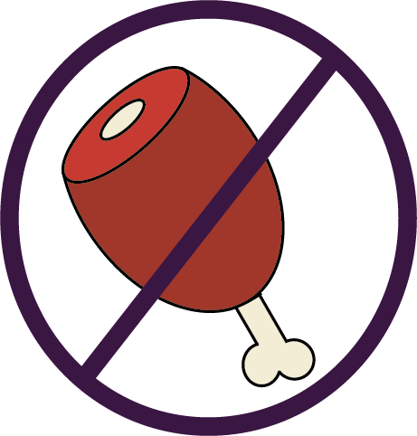

Change Your Diet
How Can Our Diet Impact The Environment?
Our diet can have a significant impact on the environment in a number of ways:
Greenhouse gas emissions: Animal agriculture is a major contributor to greenhouse gas emissions, particularly through the release of methane from livestock. Methane is a potent greenhouse gas that is estimated to be 25 times more effective at trapping heat in the atmosphere than carbon dioxide.
Land use: Agriculture is one of the largest users of land globally. Livestock farming requires a significant amount of land to produce feed and pasture for the animals. This can lead to deforestation and habitat loss, which can have a significant impact on biodiversity.
Water use: Agriculture is also a major user of water. Livestock farming, in particular, can be very water-intensive, as animals need water to drink and for the production of feed.
Pollution: The use of fertilizers and pesticides in agriculture can lead to pollution of soil and waterways, which can have negative impacts on both human health and the environment.
Energy use: Agriculture also requires significant amounts of energy, particularly for the production and transportation of food.
How Can We Eat More Sustainably?
Consuming a more plant-based diet can help to reduce the impact of our food choices on the environment. Plant-based diets typically have lower greenhouse gas emissions, require less land and water use, and can be less polluting than animal-based diets. Additionally, eating locally produced foods and reducing food waste can also help to reduce the environmental impact of our diets.
Where Can We Find Sustainable Recipes?
Sustainable food blogs: There are many blogs that focus on sustainable food and offer a variety of recipes. Some examples include "The Full Helping," "Naturally Ella," and "My New Roots."
Cookbook: There are many cookbooks that focus on sustainable food and offer a variety of recipes. Some popular examples include "The Oh She Glows Cookbook," "The Green Kitchen," and "The Happy Pear."
Food websites: There are many food websites that offer sustainable food recipes, including Epicurious, Bon Appétit, and Food52.
Practice the 3Rs (reduce, reuse, recycle) by reducing the amount of waste you generate, reusing items as much as possible, and recycling materials that can be reused.
Social media: You can also find sustainable food recipes on social media platforms like Instagram and Pinterest by searching for hashtags like #sustainablefood or #sustainablecooking.
BLocal farmers markets: You can also find sustainable food recipes by talking to local farmers and asking them for recipe suggestions based on the seasonal produce they offer.
Remember, sustainable food is about more than just the recipes you use. It's also about where and how you source your ingredients, so be sure to choose ingredients that are local, in season, and sustainably produced whenever possible.
